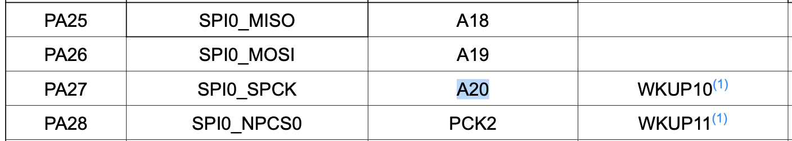
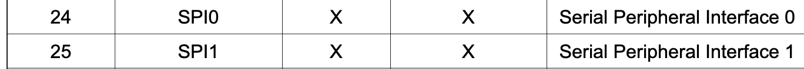

Arduino Due Slave Mode
Recently I had the chance of spending time programming an Arduino Due. The idea was to make it work with SPI in a slave mode. Unfortunally, the Arduino library only has support for master mode, so I had to go through the SAM3X8E datasheet and find out how I would do it. This was also the first time I ever bare-metal programmed an 32 bit chip, normally for hobbies, I use the Arduino library. Apart from sharing the code that might be useful for someone else, I want to share some other stuff that I leanerd while trying to establish the SPI communication.
First thing: 32 bit microcontrollers are much more complex than 8 bit ones. Ok, it might sound obvious but it really is much more complex! Pin handling: Pins are controlled by a PIO which stands for Parallel Input/Output Controller. Problem is, imagine that the pin also has another function, like SPI MISO line. It is necessary to disable the controller in order to access it!
That's why I use something like this in the code:
void enableSPIPins() {
// 1: Disables the PIO from controlling the corresponding pin (enables peripheral control of the pin).
REG_PIOA_PDR |= PIO_PDR_P25 | PIO_PDR_P26 | PIO_PDR_P27 | PIO_PDR_P28;
}
I disable the PIO A from controlling the P25 to P28, which are the ones we need to SPI protocol. From the page 40 of the datasheet, we can see that:

As a peripheral A, PA25 has SPI0_MISO and as a peripheral B has the A18, which I suppose that is an ADC pin. Almost everything has to be powered on: apart from enabling the access to the SPI peripheral, it is also necessary to turn on the peripheral power for the instance ID.

The SPI0 instance ID is 24, so we can turn it on by:
// turn on periheral power (page 38) SPI0 and PIOA.
REG_PMC_PCER0 |= PMC_PCER0_PID24 | PMC_PCER0_PID11;
Final code:
#include <Arduino.h>
// Pinout https://www.theengineeringprojects.com/wp-content/uploads/2018/09/introduction-to-arduino-due-2-1.png
// With arduino macros https://github.com/manitou48/DUEZoo/blob/master/spislave.ino
// Good doc https://microchipdeveloper.com/32arm:sam-bare-metal-c-programming
// another good code about arduino due SPI slave https://github.com/MrScrith/arduino_due/blob/master/spi_slave.ino
// FUNCTIONS
void initSPI();
void enableOnReceiveDataInterrupt();
void disableOnReceiveDataInterrupt();
uint8_t readSPIData();
void writeSPIData(int data);
void waitUntilDataReceived();
void waitUntilDataSent();
void enableSPIPins();
void setup() {
Serial.begin(115200);
while (!Serial);
initSPI();
}
void loop() {
waitUntilDataReceived();
uint8_t dataReceived = readSPIData();
Serial.print(dataReceived);
}
void initSPI() {
// Sets MISO as OUTPUT
// NSS0 (PA28) is pin digital 10
pinMode(MISO, OUTPUT);
pinMode(MOSI, INPUT);
pinMode(SCK, INPUT);
pinMode(MISO, LOW);
// turn off SPI
REG_SPI0_CR = SPI_CR_SPIDIS;
// Write protection is disabled
REG_SPI0_WPMR &= ~(SPI_WPMR_WPEN);
// turn on periheral power (page 38) SPI0 and PIOA.
REG_PMC_PCER0 |= PMC_PCER0_PID24 | PMC_PCER0_PID11;
enableSPIPins();
// RESET SPI
// enable interrupt register
// Slave mode & mode fault detection is disabled
REG_SPI0_MR &= ~(SPI_MR_MSTR);
REG_SPI0_MR |= SPI_MR_MODFDIS;
// Select SPI MODE (NCPHA, CPOL) and number of bits (8 default)
REG_SPI0_CSR |= SPI_CSR_BITS_8_BIT | 0x02;
// turn on SPI
REG_SPI0_CR = SPI_CR_SPIEN;
}
void enableSPIPins() {
// 1: Disables the PIO from controlling the corresponding pin (enables peripheral control of the pin).
REG_PIOA_PDR |= PIO_PDR_P25 | PIO_PDR_P26 | PIO_PDR_P27 | PIO_PDR_P28;
}
void enableOnReceiveDataInterrupt() {
// Enable interrupt on receive data
REG_SPI0_IER |= SPI_IER_RDRF;
}
void disableOnReceiveDataInterrupt() {
// Disable interrupt on receive data
REG_SPI0_IDR |= SPI_IDR_RDRF;
}
uint8_t readSPIData() {
return REG_SPI0_RDR & 0xFF;
}
void writeSPIData(int data) {
REG_SPI0_TDR = data & 0xFF;
}
// We can either use this or an interruption.
// Interruption might be better since it is not blocking!
void waitUntilDataReceived() {
while ((REG_SPI0_SR & SPI_SR_RDRF) == 0);
}
void waitUntilDataSent() {
while ((REG_SPI0_SR & SPI_SR_TDRE) == 0);
}